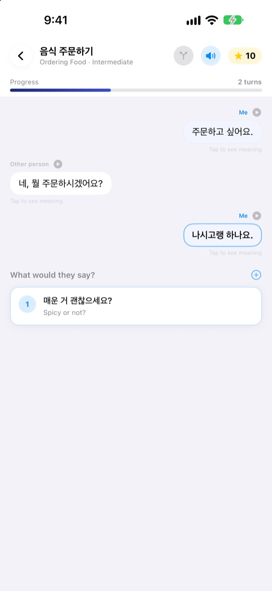
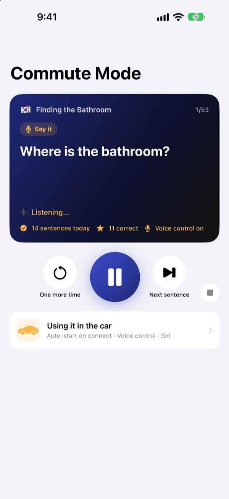
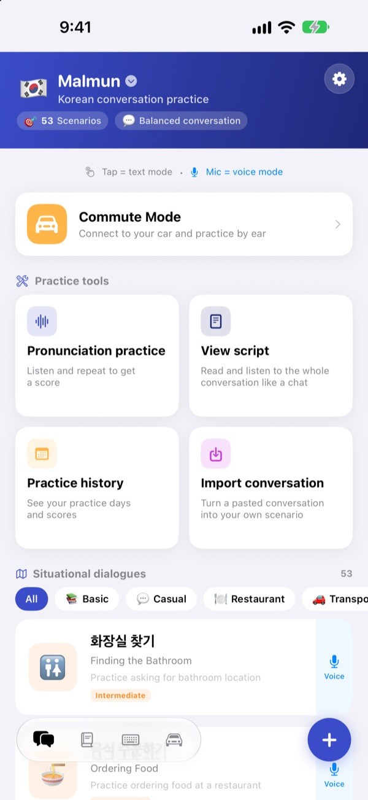
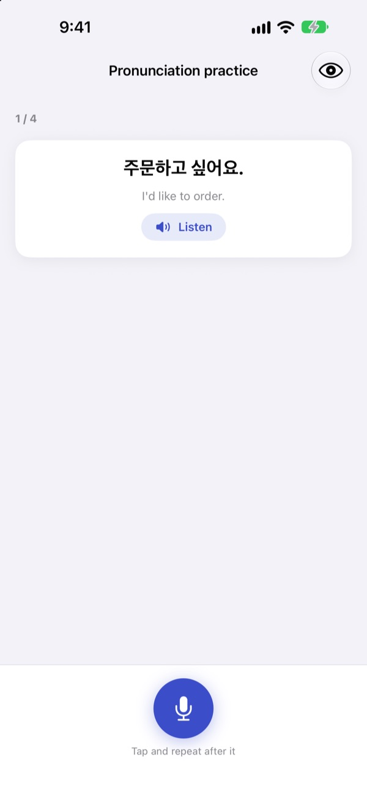

Stop freezing up.
Say it first.
Malmun is a conversation trainer where every reply you pick sends the dialogue somewhere different. Learn Korean, Japanese, Chinese, Spanish or Indonesian, and on your drive, practice with just your ears and your voice.
Branching dialogues, pronunciation practice and flashcards are free.

Keep the conversation going
This is “Morning Greetings”, an Indonesian dialogue straight from the app. Every line you pick takes the conversation in a different direction.
Memorized the phrase, then blanked on the reply?
Textbook dialogues always go to plan. Real people answer with something you didn't see coming. Malmun lets you walk every branch of a conversation ahead of time, so whatever comes back, you have a next line ready. Even the drive home turns into practice.
Practice by ear while you drive
Commute Mode plays through your car speakers over Bluetooth or CarPlay. You hear the meaning, a chime gives you time to say it, then the answer plays once slowly and once at normal speed.
Skip and repeat with the steering-wheel buttons, or just say next, again or slower on your turn. It pauses for navigation prompts.

Every scene from travel and daily life
Each language has 53 situational dialogues, from basics and casual chat to restaurants, getting around, the airport, hotels, shopping, sightseeing and emergencies.
Indonesian has more: 5 hand-made small-talk scenarios, 3 Day Courses of 6 scenes each with a weekly timetable, and a 100-word business-trip deck.

Check that you said it right
Pronunciation practice gives you a score and colors the words you nailed and the ones you missed.
Script view lays out the whole dialogue like a chat. Play it straight through, or hide the meanings and test yourself.

Three steps to start
- 1
Pick a language
Tap the flag at the top of the home screen. Phrases and vocab are kept separately for each language.
- 2
Open a dialogue
Tap replies in text mode, or tap the mic and speak. Voice mode finds the closest reply.
- 3
In the car, use Commute Mode
Connect your phone to the car and press play. No need to look at the screen.
Commute Mode controls
- Steering wheel: next track
- Next sentence
- Steering wheel: previous track
- Same sentence again
- Play button
- Pause and resume
next·skip- Next sentence
again·repeat- Hear it again
slower·faster- Change the reading speed
next scene- Jump to the next dialogue
stop·pause- Stop practicing
- Siri: “Start commute practice in Malmun”
- Start without touching the phone
Voice commands are only heard on your turn, after the chime. Say the sentence right and you hear “Nice!”. The current sentence shows in your car's Now Playing. There is no separate CarPlay app screen.
Almost everything is free. Pro opens the rest.
Free
- Branching small talk and Day Courses (Indonesian)
- Situational dialogues: Basics and Casual chat
- Commute Mode, 3 scenes a day
- Pronunciation practice, script view, dialogue import, practice history
- My phrases, vocab flashcards, phrase keyboard
- Share scenarios with friends, generate scenarios with AI
Malmun Pro
- Every situational dialogue: restaurants, getting around, airport, hotels, shopping, sightseeing, emergencies
- Unlimited Commute Mode
- Covers all six languages
Yearly subscription or a one-time lifetime purchase
See prices in the app or on the App Store. The yearly plan renews automatically unless cancelled at least 24 hours before the period ends.
Questions
How do I use it in the car?
Connect your phone to the car over Bluetooth or CarPlay, open Commute Mode and press play. Sound comes from the car speakers and the current sentence shows in Now Playing. You can also ask Siri to “Start commute practice in Malmun”, or set up a Shortcuts automation once so it starts when CarPlay (or your car's Bluetooth) connects.
Is the mic always listening?
No. It only listens on your turn, after the chime, through the phone mic, and what it hears is processed on your device. Say commands in the app's display language.
Which languages can I learn?
Korean, Japanese, Chinese, Spanish and Indonesian, plus English if your app runs in one of those languages. The language the app shows meanings in can't be picked as the one you learn.
It isn't recognizing my pronunciation.
Speech recognition runs in the language you're learning. Try somewhere quieter, and check that speech recognition for that language is downloaded on your device.
How do I add the keyboard?
Go to Settings ▸ General ▸ Keyboard ▸ Keyboards ▸ Add New Keyboard and choose the Malmun keyboard. Tap the globe key while typing to switch to it. Full Access isn't needed. To show fewer phrases, tap the keyboard icon at the bottom right of the home screen ▸ Manage keyboard and switch phrases on or off.
I can't see a scenario my friend shared.
Sharing with friends works through iCloud, so you both need to be signed in to iCloud. If it still doesn't appear, fully close the app and open it again.
What do I need to generate scenarios with AI?
Add your own Anthropic API key in the app and type a topic, and it writes a new dialogue. Everything else works without a key.
How do I cancel or get a refund?
Payments are handled by Apple. Cancel in iPhone Settings ▸ Apple Account ▸ Subscriptions ▸ Malmun. For a refund, ask Apple at reportaproblem.apple.com.
I got a new phone and Pro is gone.
Sign in with the same Apple Account, then go to Settings ▸ Malmun Pro ▸ Restore Purchases in Malmun.
Where is my progress stored?
No account needed. Your learning data stays on your device and in your own iCloud. No ads, no tracking, only anonymous usage statistics and crash diagnostics. Bugs and feature requests are also welcome on GitHub Issues (github.com/M1zz/IndonesianSmallTalk/issues).
Questions or feedback? Write to leeo@kakao.com, use Settings ▸ Send Feedback in the app, or find us on Instagram at @lee25_ios.